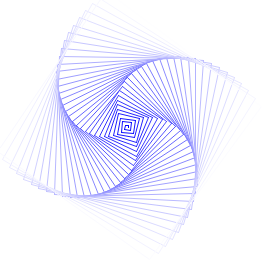
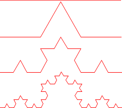

Adventi naptár
Czirkos Zoltán · 2019.02.27.
Teknőcgrafika
A programozásban sokszor egy probléma megoldásának úgy érdemes nekiindulni, hogy kitalálunk egy új nyelvet, amellyel (amelyen) a megoldást könnyebben megfogalmazhatjuk. Gondoljunk bele: ha a kitalált nyelv szavait, kifejezéseit lefordítjuk C nyelvre (pl. C- beli függvényhívásokra), akkor a C nyelv lehetőségeit (ciklusok, változók, függvények stb.) automatikusan kapjuk melléjük kiterjesztésként. Vagyis a kitalált nyelvünknek automatikusan részévé válnak a C nyelv kombinációs és absztrakciós lehetőségei.
Ilyen kitalált nyelv a teknőcgrafika, amely sokak számára Comenius Logo néven lehet ismerős. Képzeljük el, hogy egy teknős sétál a képernyőn. Van nála egy ceruza, amellyel vagy húz vonalat séta közben, vagy nem. A következő utasításokat kaphatja:
- Emelje fel a ceruzát. (A mozdulatai így nem fognak látszani.)
- Tegye le a papírra a ceruzát. (A nyoma így megmarad.)
- Sétáljon előre valamennyit.
- Forduljon el valahány fokkal.
Ezen a nyelven egy négyzet rajzolása így fogalmazható meg:
Tedd le a ceruzát. Sétálj előre 5 centit. Fordulj balra 90 fokkal. Sétálj előre 5 centit. Fordulj balra 90 fokkal. Sétálj előre 5 centit. Fordulj balra 90 fokkal. Sétálj előre 5 centit.
Ha megírjuk az alap teknőcműveleteket C-ben, akkor annak képességei
kiterjesztik a teknőcgrafika képességeit is. A fenti példában
az ismétlés lesz a C for() ciklusára cserélhető:
Tedd le a ceruzát.
for (i = 0; i < 4; ++i) {
Sétálj előre 5 centit.
Fordulj balra 90 fokkal.
}
Innentől kezdve pikk-pakk megy minden, használhatunk változókat, ciklusokat, írhatunk függvényeket, amelyek bonyolultabb műveleteket végeznek el és így tovább. Együtt használhatjuk a C nyelv adta lehetőségeket a grafikus nyelvünkkel. A fenti négyzet könnyen általánosítható akárhány oldalú szabályos sokszögre, ha nem 360/4=90 fokot fordulunk, hanem 360/n fokot, ahol n a csúcsok száma. Erre is írhatunk C függvényt:
void sokszög(int csúcsok, double oldalhossz) {
for (int i = 0; i < csúcsok; ++i) {
Sétálj előre oldalhossz centit.
Fordulj balra 360/csúcsok fokot.
}
}
A rajzolás megvalósításához az SDL függvénykönyvtárat használja a letölthető program. Ez egy viszonylag egyszerű, játékok írásához kifejlesztett függvénykönyvtár. A telepítéséről és használatáról az Érdekességek menü SDL menüpontja alatt már írtunk.
typedef struct Teknoc {
double x, y; /* pozicio */
double szog; /* szog */
bool rajzol; /* rajzol-e mozgas kozben */
Uint32 szin; /* szin */
} Teknoc;A teknőc a következő adatokkal rendelkezik, amelyeket egy struktúrában tárolhatunk:
- koordináta a képernyőn,
- irány (merre néz),
- ceruza lent/fent
- és a ceruza színe.
Az egyes alap lépésekhez mind érdemes függvényeket írni, amelyek első paraméterükként átveszik azt a teknőcöt, amellyel dolgoznak. Így ingyen kapjuk azt a lehetőséget is a teknőcgrafikánkat most megalapozó C-ből, hogy több teknőcöt hozzunk létre, amelyek egymástól függetlenül tudnak rajzolni.
A függvények implementálása egyszerű. A legbonyolultabb függvény lent látható, és
az előrefelé sétálást valósítja meg. (Ez is csak néhány sorból áll.)
Ebben kapunk
egy hosszt – ennyit kell a teknőcnek előre mennie. Az elmozdulás irányát
az adja meg, hogy éppen merre néz. A képernyőn ennek komponensei az r·cos(szög)
és r·sin(szög) képletekkel számolhatóak. A math.h szögfüggvényeinek
a szöget radiánban
kell megadnunk. A lenti kódrészletben a line() az SDL
függvénye, és egy szép, „simított” szakaszt rajzol. Első paraméterével
adjuk meg, hogy hova rajzoljon –
renderer azt jelenti, hogy közvetlenül a képernyőre. A további
paraméterei a kezdő- és végpontok, illetve a szín.
void teknoc_elore(Teknoc *t, double r) {
double const deg2rad = 3.14159265358979323846 / 180.0;
double ujx = t->x + r * cos(t->szog * deg2rad),
ujy = t->y - r * sin(t->szog * deg2rad);
if (t->rajzol)
aalineColor(renderer, t->x, t->y, ujx, ujy, t->szin);
t->x = ujx;
t->y = ujy;
}A letölthető kódban a további megvalósított függvények az alábbiak:
/* inicializal egy teknocot: kepernyo kozepe, jobbra nez, nem rajzol */
void teknoc_init(Teknoc *t);
/* beallitja a ceruza szinet, rgb: voros, zold, kek komponensek 0..255 */
void teknoc_szin(Teknoc *t, Uint8 r, Uint8 g, Uint8 b);
/* leteszi a ceruzat */
void teknoc_rajzol(Teknoc *t);
/* felemeli a ceruzat */
void teknoc_nemrajzol(Teknoc *t);
/* balra fordul valahany fokkal */
void teknoc_fordul(Teknoc *t, double dszog);
/* teleportal az adott kepernyokoordinatakra es iranyba */
void teknoc_teleport(Teknoc *t, double ujx, double ujy, double ujszog);Fraktálok ismétlődő részekből álló görbék, minták, amelyek dimenziószáma nem egész szám. (Vigyázat: nem ez a pontos, matematikai definíció.) Mit jelent ez? A pontokról tudjuk, hogy nincs kiterjedésük: nulla dimenziósak. Egy görbének hossza van: egy dimenziós. Egy síkidomnak két irányban van kiterjedése, ezért két dimenziós, míg egy testnek három irányba. A fraktáloknál nem ilyen egyszerű a helyzet. 
Nézzük meg egy kicsit jobban az ábrát. Ez a következőképpen keletkezik. Először adott egy szakasz (legyen ez egységnyi hosszú). Ezt a szakaszt elharmadoljuk, és a középső harmadot kicseréljük két egyharmad hosszú szakaszra (minta egy egyenlő oldalú háromszög lenne). Az így kapott töröttvonal hossza 4×1/3, azaz 4/3 lesz, ami az eredeti szakasz hosszának 4/3-adszorosa.
Ha ezt a műveletet megismételjük minden 1/3 hosszú szakaszra, a keletkező töröttvonalak hossza 4/3×1/3 lesz, és mivel összesen 4 van belőlük – az összegzet hosszuk 4/3×4/3, tehát (4/3)2. Így haladva minden lépésben a hossz az előző 4/3-szorosa lesz, tehát L=(4/3)n az n-edik lépés után. Ez nem korlátos: n növelésével a végtelenbe tart! Miért érdekes ez annyira? Azért, mert az ábra mérete viszont korlátos. Könnyen rajzolhatunk egy téglalapot, amelybe belefér, tehát az elfoglalt területe korlátos, a töröttvonal hossza mégsem az! Mivel csak egy vonalról van szó, nem mondhatjuk, hogy két dimenziós. Azt sem, hogy egy dimenziós, mivel a hossza bármely két tetszőleges pontja között is végtelen.
Mivel a fenti, teknőcös függvényeket használhatjuk a saját, C-ben megírt rekurzív függvényünkben, így ezek a rajzok könnyen elkészíthetőek. Az előbb leírt görbéhez, Koch görbéjéhez az alábbi rekurzív algoritmus vezet:
- Ha n=0, akkor egy egyenes szakaszt kell rajzolni,
- Ha n>0, akkor pedig a következőket kell tenni:
- Kirajzolni az n-1-es ábrát,
- Elfordulni balra 60 fokkal, újabb rajzot készíteni,
- Jobbra fordulni 120 fokkal, újabb rajz,
- Balra 60 fok, és újabb rajz.
A fentiek C-ben, vagy éppen teknőcgrafikában, kinek hogy tetszik:
void fraktal(Teknoc *t, int mennyi, double mekkora) {
if (mennyi == 0) {
teknoc_elore(t, mekkora);
} else {
fraktal(t, mennyi - 1, mekkora);
teknoc_fordul(t, 60);
fraktal(t, mennyi - 1, mekkora);
teknoc_fordul(t, -120);
fraktal(t, mennyi - 1, mekkora);
teknoc_fordul(t, 60);
fraktal(t, mennyi - 1, mekkora);
}
}Ha egy hatszög oldalait cseréljük ilyen rajzokra, akkor egy hópelyhet kapunk. Kifordítva a rajzokat megkapjuk Koch hópelyhét is. Rengeteg ilyen tulajdonságú görbét lehet találni: David Hilbert térkitöltő görbéje is ilyen. Ezeket mind nagyon könnyű teknőcgrafikával, és az azt most megvalósító C nyelv egyik eszközével – a rekurzióval – megrajzolni.
/* hópelyhet rajzol */
for (int i = 0; i < 6; ++i) {
fraktal(&t, 2, 10);
teknoc_fordul(&t, 60);
}A program letölthető innen: advent8-teknoc.c. A lefordításhoz az SDL című írás ad segítséget (lásd az Érdekességek menüpontot – Windowshoz és Linuxhoz).